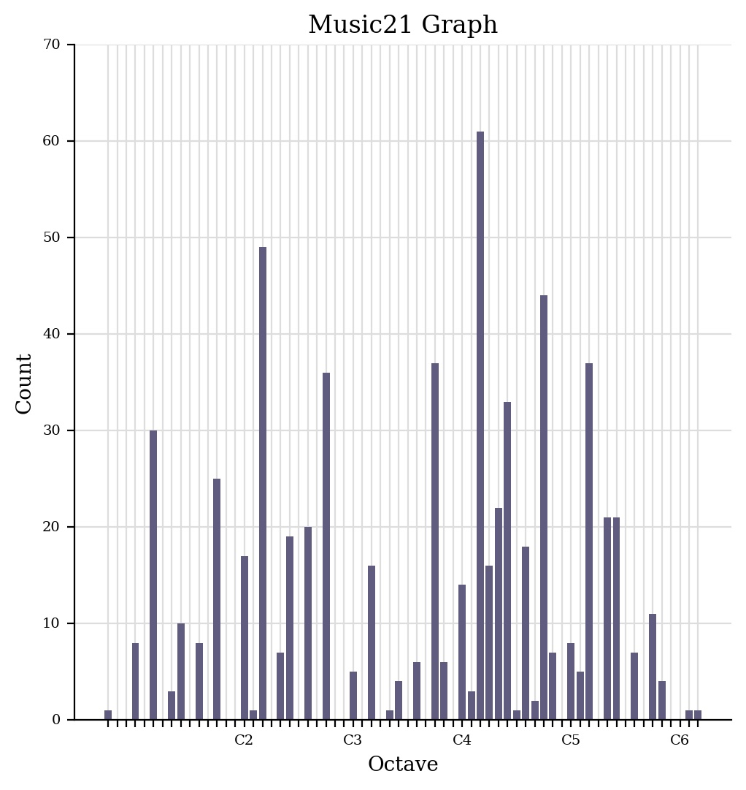
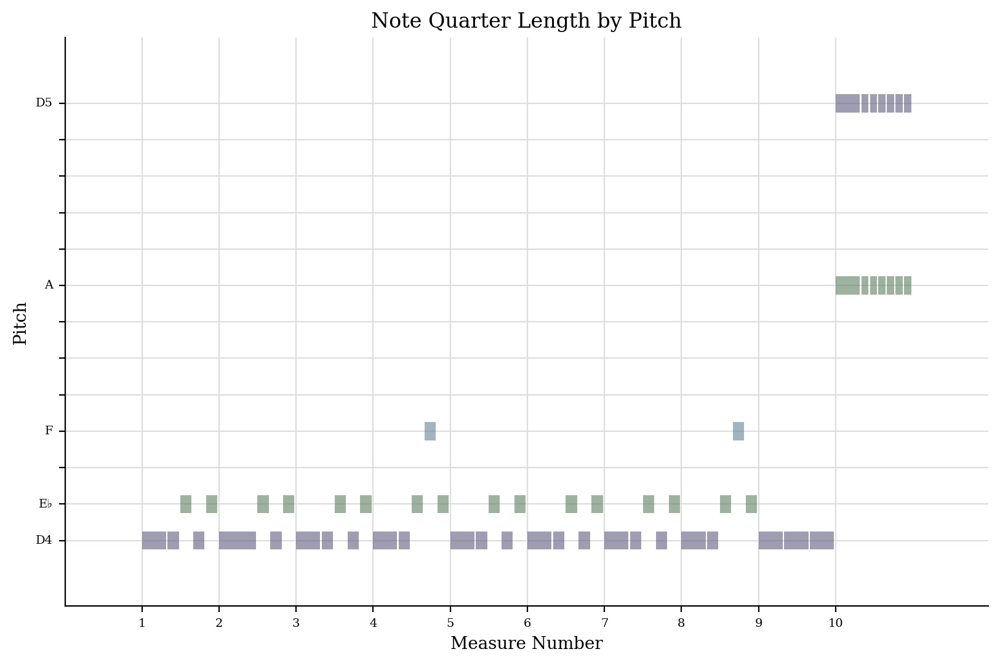
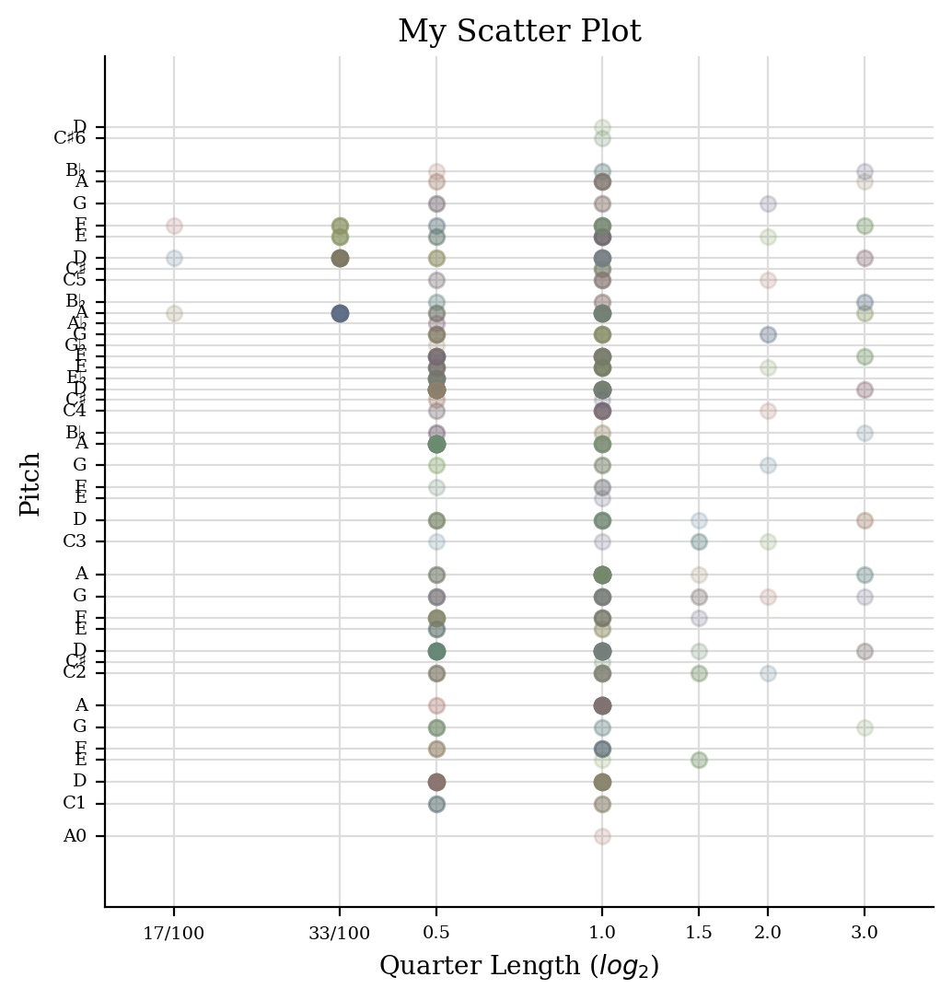

For this task, we have to create a jSymbolic analysis of our chosen piece.
The features I chose, along with their values are listed below
- Range: 65
- Mean Pitch: 55
- Most Common Pitch Class: 2
- Last Pitch: 26
- Most Common Rhythmic Value: 0.5
Task 2: Using Python Notebook and Music21 to generate graphs


